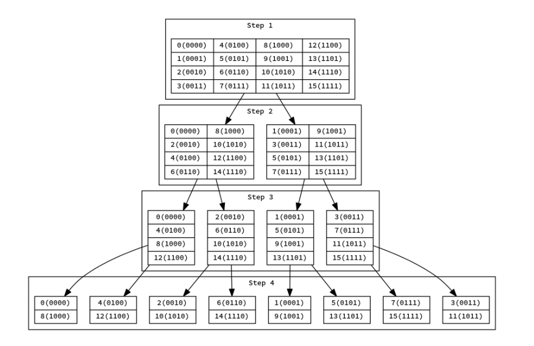
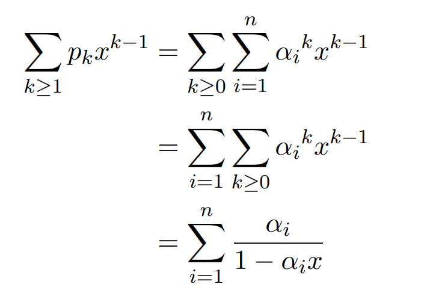
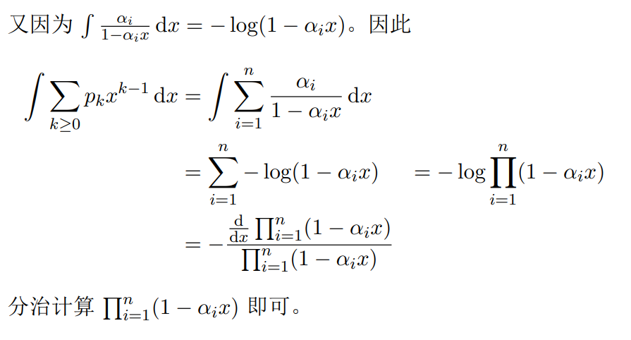
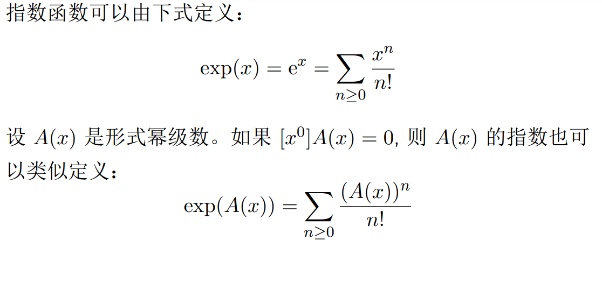
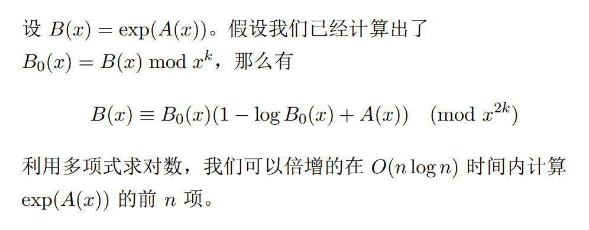

快速傅里叶变换
多项式
一个环 $R$ 上的关于 $x$ 的多项式可以写作
其中 $a_i \in \mathbb{R}$
$x$ 被称为这个多项式的自由元
多项式的次数被定义为其最高非零次项的次数，记为 $\deg A(x)$
多项式运算
设 $A(x),\; B(x)$ 是次数不超过 $n$ 的多项式
那么加法和减法运算被定义为：
显然可以在 $O(n)$ 时间内计算这两个多项式的和或差
卷积
设 $a, b$ 是两个数列，那么这两个数列的卷积 $c$ 的定义为
多项式乘法
两个多项式的乘积被定义为：
其中 $c$ 是 $a$ 与 $b$ 的卷积
朴素的按定义计算多项式乘法的时间复杂度是 $O(n^2)$ 的
多项式点值表示
给定一个不超过 $n$ 次的多项式 $A(x)$ 以及 $n + 1$ 个不同的点 $x_0,\cdots,x_n$,令 $y_i = A(x_i)$
则这 $n + 1$ 组 $(xi , yi)$ 唯一的确定了这个多项式 $A(x)$
这些 $(x_i,y_i)$ 称作这个多项式的点值表示
如果给出 $A(x)$ 和 $B(x)$ 分别在 $x_0,\cdots,x_n$ 下的点值，则可以在 $O(n)$ 时间内得到 $A(x) \pm B(x)$ 或 $A(x)B(x)$ 在同一组位置处的点值
系数与点值表示
给出 $n$ 次多项式 $A(x)$ 的各项系数，可以通过求值计算多项式的点值表示
给出 $n$ 次多项式 $A(x)$ 的点值表示，可以通过待定系数，解方程得到多项式的各项系数
得到多项式的各项系数
如何在多项式的系数和点值表示之间快速转换？
这促使我们考虑一组特殊的点值
单位根
满足 $x^n−1=0$ 的 $x$ 被称作 $n$ 次单位根
设 $\omega$ 是 $n$ 次单位根
如果 $ω_0,ω_1,\cdots, ω_m(m=n-1)$ 恰好生成了所有的 $n$ 次单位根（即两两不同），则称 $ω$ 为本原单位根
这等价于 $n$ 是 最小的使得 $\omega^n−1=0$ 的正整数。我们用 $\omega_n$ 来表示一个 $n$ 次本原单位根
在复数域 $\mathbb{C}$ 上，$\omega_n = \exp(\frac{2πi}n)=\cos\frac{2π}n +i\sin\frac{2π}n$ 是一个本原单位根
下文首先考虑 $\mathbb{C}$ 上的多项式
在有限域（即模素数的情况）中，本原单位根与数论中的原根有关
离散傅里叶变换
设 $a$ 是长度为 $n$ 的数列，对 $0 \le k < n$，令
则称 $b$ 为 $a$ 的离散傅里叶变换 $(DFT)$ ，记作 $b = F(a)$
容易看出，令 $A(x) = \sum a_ix^i$，则 $b_k$ 就是 $A(x)$ 在 ${ω_n}^k$ 处的点值
因此计算 $a$ 的 $DFT$ 与计算 $A(x)$ 在 ${\omega_n}^0,{\omega_n}^1,\cdots,{\omega_n}^{n−1}$ 处的点值表示是等价的
离散傅里叶变换的逆变换
对于长度为 $n$ 的序列 $a, b$，回忆 $DFT$ 的定义 :
下面我们来证明 $(1)$ 的逆变换$(IDFT)$如下 :
考虑将$(1)$代入$b_i$, 有:
我们考虑式子中的$\sum\limits_{i=0}^{n-1}{\omega_n}^{i(j-k)}$这一部分
若 $j=k$ , 则
若 $j=k$, 则由 $0\le j, k\le n$, 有$|j-k| < n$, 故${\omega_n}^{j-k}\ne1$
因此可以由等比数列数列求和的结论得到
因此, 有
即$(2)$成立
类似的，可以证明由 $(2)$ 成立可以推出 $(1)$ 成立，故这两式是互逆的
这就是 $IDFT$
$IDFT$ 是 $DFT$ 的逆变换，也就意味着已知多项式在单位根处的点值，$IDFT$ 能够求出多项式的各项系数. 在这种意义上，这个 过程也可以看作插值
循环卷积
对于两个长度为 $n$ 的序列 $a, b$，定义
则称 $c$ 为 $a$ 与 $b$ 的循环卷积，记为 $c = a ∗ b$
关于循环卷积与 $DFT$，我们有如下定理：
其中 $\cdot$ 表示逐点乘积
快速傅里叶变换1
按定义，我们可以 $O(n^2)$ 实现 $DFT$ 或 $IDFT$. 快速傅里叶变换是快速计算 $DFT$ 的方法，时间复杂度为 $O(n \log n)$
当 $n$ 为 $2$ 的幂次的时候，我们可以使用 $Cooley–Tukey$ 算法来实现 $FFT$
单位根的一些性质
考虑 $\omega_n$ 与$ω_m(m=2n)$, 我们有
设 $n = 2m$. 我们考虑将 $A(x)$ 的项按次数的奇偶性分类：
定义
那么 $A_0(x)$, $A_1(x)$ 都是次数不超过 $m$ 的多项式，并且有
蝴蝶操作
结合单位根的性质，对于 $0 ≤ k < m$，我们有
以上两式常被称为蝴蝶操作
快速傅里叶变换2
通过蝴蝶操作的过程可以看出，如果我们得到了 $A_0(x), A_1(x)$ 在点 ${ω_m}^0,{ω_m}^1, . . . , {ω_m}^{m−1}$ 处的点值，我们可以在 $O(n)$ 时间内计算出 $A(x)$ 在 ${ω_n}^0 , {ω_n}^1,\cdots, {ω_n}^{n−1}$ 处的点值
而计算 $A0, A1$ 的点值的过程可以递归分治进行
根据主定理，我们可以在 $O(n \log n)$ 的时间内求出所要的 $A(x)$ 的点值表示
为了快速的进行 $IDFT$，对比 $DFT$ 与 $IDFT$ 的表达式，可以发现我们只需要将 $FFT$ 过程中用到的 $ω_n$ 全部替换为 $ω_n^{-1}$，最后再 乘以 $\frac 1n$ 即可。

位逆序置换
可以观察到，令 $rev(x)$ 表示将 $x$ 的二进制位的顺序反转之后得到的数字，令
则每次需要对 $a$ 进行的蝴蝶操作在 $a\prime$ 中变成了对两个相邻的序列的操作
把 $a$ 转化为 $a\prime$ 的过程常称为位逆序置换
非递归的 $FFT$ 实现
因此得到 $a\prime$ 后，我们首先对 $a\prime$ 的每一对相邻的长度为 $1$ 的子序 列做蝴蝶操作，然后对每一对相邻的长度为 $2$ 的子序列$\cdots\cdots$最 后对两个长度为 $\frac n2$ 的子序列做蝴蝶操作，我们就完成了对 $a$ 的 $FFT$
$DFT$ 与 $FFT$ 都是在 $\mathbb{C}$ 中进行的过程
在很多时候，我们往往是在对整数进行操作，并且经常要对某个素数 $p$ 取模
注意到单位根在 $DFT$ 中起了重要的作用，我们来考虑在模素数的时候是否存在和单位跟性质类似的元素
原根
设 $p$ 是素数. 由费马小定理，我们知道对于任意 $a$ 满足 $p - a$， 有
$g$ 称为模 $p$ 的原根，当且仅当 $g_0 , g_1 ,\cdots, g_q(q=p−2)$ 在模 p 意义下互 不相同。 可以证明，模质数的原根总是存在的
原根的性质和本原单位根非常类似. 换句话说，在 $\mod p$ 意义 下，$g$ 可以被看做一个 $p − 1$ 次本原单位根
数论变换
设 $n$ 满足 $n | p − 1$. 令 $ωn = g^{\frac{p−1}n} $. 那么有
并且 ${ω_n}^0 , {ω_n}^1 ,\cdots, {ω_n}^{n−1}$ 互不相同
于是 $ω_n$ 在 $\mod p$ 意义下具有 $n$ 次本原单位根的性质。我们 以利用它类似的定义 $DFT$. 这被称为数论变换$NTT$
快速数论变换
如果 $n = 2k$，则也可以利用与 $FFT$ 类似的方式快速的计算数论变换。 但是因为 $2^k = n | p − 1$，这意味着快速数论变换对所选取的素数模数有着特殊的要求
比如常见的模数
$FFT$ 的基本应用
$FFT$ 计算的是 $DFT$，因此 $FFT$ 的直接应用主要与卷积有关
- 直接计算卷积
- 进行多项式相关运算
- 卷积与字符串匹配
计算卷积
注意到利用 $FFT$，我们能直接进行的是长度为 $2^k$ 的循环卷积
如果要进行一般的卷积运算，注意到两个长度为 $n$ 的序列的卷积长度为 $2n − 1$，因此一般会选择 $k$ 使得 $2^k \ge 2n − 1$，然后对序列进行长度为 $2^k$ 的 $FFT$
如果要进行一般的长度的循环卷积，则使用普通卷积来模拟
利用 FFT 进行多项式乘法
多项式乘法就是系数进行卷积的过程，因此可以使用 FFT 计算
利用 FFT 进行高精度乘法
高精度乘法就是多项式乘法，只需处理进位即可
卷积与字符串匹配
假设 $x, y$ 是两个用正整数表示的字符，那么 $x = y$ 当且仅当 $(x − y)^2 = 0$
若 $a = (ai) $与 $b = (bi)$ 是长度分别是 $n, m$ 的两个字符串，那么 $b$ 在 $a$ 的第 $k$ 个位置匹配当且仅当
注意到其中前两项容易计算，而第三项可以化为卷积，因此可以使用 $FFT$ 计算
含有通配符的字符串匹配
如果 $b$ 中含有一种特殊的字符（通配符）可以与 $a$ 的任意字符匹配，如何求 $b$ 在 $a$ 中的匹配？
不妨把通配符用 $0$ 表示，如果 $x$ 是普通字符，$y$ 可能是通配符， 那么 $x$ 与 $y$ 匹配当且仅当 $x = y$ 或 $y = 0$，也就是 $y(x − y)^2 = 0$
那么字符串的匹配就可以表达为：
类似的，这个转化后也可以利用 $FFT$ 计算
多项式与形式幂级数
形式幂级数
环 $R$ 上的形式幂级数形如
其中 $a_n\in R$. x 称为这个形式幂级数的自由元
多项式是仅有有限项非零的形式幂级数
因此，形式幂级数可以 看成是对多项式的推广
一般形式幂级数中的自由元不带入具体数值
运算
形式幂级数的运算规则与多项式的运算规则是类似的
同样多项式类似，形式幂级数的乘法对应两个无穷数列的卷积
生成函数
可以看出，形式幂级数 $A(x)$ 自然的对应着一个无穷的数列 $a = (a_0, a_1, a_2, \cdots)$
因此 $A(x)$ 称为数列 $a$ 的生成函数
模意义下的多项式
设 $A(x), B(x), P(x)$ 是多项式。我们称 $A(x) ≡ B(x) \pmod {R(x)}$，如果存在多项式 $Q(x)$，使得
因此，多项式也可以在模意义下讨论
在实际运算中，我们时常只关心多项式（形式幂级数）的前有限 项，并且希望多项式（形式幂级数）在这种意义下参与运算
如 果只关心前 $n$ 项，我们采用记号 $\mod x^n$ 表示
形式幂级数的逆元
设 $A(x)$ 是形式幂级数。如果 $a_0\ne0$, 那么存在形式幂级数 $B(x)$，使得 $A(x)B(x) = 1$. 这时，称 $B(x)$ 是 $A(x)$ 的逆元，记 作 $B(x) = \frac1{A(x)}$
通过比较系数，我们可以得到:
形式幂级数的除法
通过定义逆元，我们可以定义除以一个形式幂级数为乘以其逆元
斐波那契数列
定义斐波那契数列满足 $f(0) = f(1) = 1, f(n) = f(n−1) + f(n−2)$
求斐波那契数列的生成函数
可以发现我们有 $F(x) = (x + x^2 )F(x) + 1$. 因此答案是
逆元的计算
假设我们已经计算出了 $B_0(x) = B(x) \mod x^k$，那么我们有
这意味着
那么我们有
由此可以计算出 $g(x)$ 的前 $2k$ 项
根据主定理，计算 $B(x) \mod x^n$ 的时间复杂度为 $O(n \log n)$
导数与积分
设 $A(x) = \sum\limits_{n≥0}a_nx^n$ 是形式幂级数。定义 $A(x)$ 的（形式）导数为
类似的，定义定义 $A(x)$ 的（形式）积分为
对数
（自然）对数可以由下式定义：
设 $A(x)$ 是形式幂级数。如果 $[x^0]A(x) = 1$, 则 $A(x)$ 的对数也可以类似定义：
我们有
因此，
等幂和
给出 $n$ 个数 $α1, . . . , α_n$ 定义 $p_k = \sum\limits^n{i=1} α_i^k$
对于 $1 \le k \le n$， 求 $p_k, n ≤ 10^5$
注意到 $\sum\limits_{k≥0} α_kx^k = \frac1 {1−αx}$因此


指数

